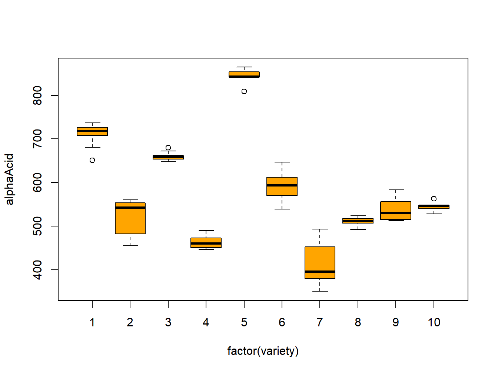

Chapter 11 Random and Mixed Effects Models
In some situations, experiments include random treatment factors. In these cases, the treatment/group levels observed in the study represent a sample from a larger population of such levels. Interest is in the overall mean response, as well as in variation in responses across and within treatments/groups.
In this chapter, we consider 1-Way Random Effects, 2-Way Random Effects, 2-Way Mixed Effects, and 3-Way Mixed Effects Models.
11.1 1-Way Random Effects Model
This model has a single factor, with levels that represent a sample from a population of such levels. The goal is to make inferences regarding the overall mean and variances between groups and within groups. The statistical model for the balanced case is given below.
\[ Y_{ij} = \mu_i + \epsilon_{ij} \qquad i=1,\ldots,r;\quad j=1,\ldots,n \] \[ \mu_i \sim N\left(\mu_{\bullet},\sigma_{\mu}^2\right) \mbox{ independent } \qquad \epsilon_{ij} \sim N\left(0,\sigma^2\right) \mbox{ independent } \qquad \{\mu_i\},\{\epsilon_{ij}\} \mbox{ independent } \] Alternatively, we could formulate the model as follows. \[ Y_{ij} = \mu_{\bullet} + \tau_i + \epsilon_{ij} \qquad i=1,\ldots,r;\quad j=1,\ldots,n \] \[ \tau_i \sim N\left(0,\sigma_{\tau}^2\right) \mbox{ independent } \qquad \epsilon_{ij} \sim N\left(0,\sigma^2\right) \mbox{ independent } \qquad \{\tau_i\},\{\epsilon_{ij}\} \mbox{ independent } \] For the original model, \(\mu_{\bullet}\) is the overall population mean response, \(\sigma_{\mu}^2\) is the between group variance, and \(\sigma^2\) is the within group variance. The experiment is conducted as follows.
- Sample \(r\) groups from a population of groups.
- Sample \(n\) units from within each group.
- Observe the \(n_T=rn\) responses.
The mean and variance-covariance structure of the observations are given below.
\[ E\left\{Y_{ij}\right\}=E\left\{\mu_i+\epsilon_{ij}\right\}=\mu_{\bullet}+0=\mu_{\bullet} \]
\[ V\left\{Y_{ij}\right\}=V\left\{\mu_i+\epsilon_{ij}\right\}= V\left\{\mu_i\right\} + V\left\{\epsilon_{ij}\right\} +2\mbox{COV}\left\{\mu_i,\epsilon_{ij}\right\}=\] \[=\sigma_{\mu}^2+\sigma^2+2(0) =\sigma_{\mu}^2+\sigma^2=\sigma_Y^2 \] For two measurements within the same group \((j \ne j')\), we have the following covariance, which differs from the fixed effects case (where the observations are independent). \[ \mbox{COV}\left\{Y_{ij},Y_{ij'}\right\} = \mbox{COV}\left\{\mu_i+\epsilon_{ij},\mu_i+\epsilon_{ij'}\right\} =\]
\[ \mbox{COV}\left\{\mu_i,\mu_i\right\} + \mbox{COV}\left\{\mu_i,\epsilon_{ij'}\right\} + \mbox{COV}\left\{\epsilon_{ij},\mu_i\right\} + \mbox{COV}\left\{\epsilon_{ij},\epsilon_{ij'}\right\} = \sigma_{\mu}^2+0+0+0=\sigma_{\mu}^2 \] \[ \mbox{COV}\left\{Y_{ij},Y_{i'j'}\right\} =0 \quad i \neq i' \quad \forall j,j' \]
For the case, with \(r=n=2\), the mean and variance-covariance structure for \(Y\) are given in the following matrix forms.
\[ Y=\begin{bmatrix} Y_{11} \\ Y_{12} \\ Y_{21} \\ Y_{22} \\ \end{bmatrix} \qquad E\{Y\} =\begin{bmatrix} \mu_{\bullet} \\ \mu_{\bullet} \\ \mu_{\bullet} \\ \mu_{\bullet} \\ \end{bmatrix} \qquad \sigma^2\{Y\} =\begin{bmatrix} \sigma_Y^2 & \sigma_{\mu}^2 & 0 & 0 \\ \sigma_{\mu}^2 & \sigma_Y^2 & 0 & 0 \\ 0 & 0 & \sigma_Y^2 & \sigma_{\mu}^2 \\ 0 & 0 & \sigma_{\mu}^2 & \sigma_Y^2 \\ \end{bmatrix} \]
The Intraclass Correlation Coefficient measures the proportion of the total variation in responses that is due to variation in group means.
\[ \rho_I = \frac{\mbox{COV}\left\{Y_{ij},Y_{ij'}\right\}}{ \sqrt{V\left\{Y_{ij}\right\}V\left\{Y_{ij'}\right\}}}= \frac{\sigma_{\mu}^2}{\sigma_Y^2} \]
11.1.1 Analysis of Variance
In this section, we set up the Analysis of Variance and derive the expected mean squares for \(MSTR\) and \(MSE\). Note that the quantities are the same for the random effects model as for the fixed effects model, but the expectations differ for the two models.
\[ SSTR = n\sum_{i=1}^r\left(\overline{Y}_{i\bullet}-\overline{Y}_{\bullet\bullet}\right)^2 = n\sum_{i=1}^r\overline{Y}_{i\bullet}^2-nr\overline{Y}_{\bullet\bullet}^2 \]
\[ SSE=\sum_{i=1}^r\sum_{j=1}^n\left(Y_{ij}-\overline{Y}_{i\bullet}\right)^2 = \sum_{i=1}^r\sum_{j=1}^n Y_{ij}^2 - n\sum_{i=1}^r\overline{Y}_{i\bullet}^2 \]
\[ E\left\{Y_{ij}\right\} = E\left\{\overline{Y}_{i\bullet}\right\} = E\left\{\overline{Y}_{\bullet\bullet}\right\} = \mu_{\bullet} \]
\[ V\left\{Y_{ij}\right\}=\sigma_{\mu}^2+\sigma^2=\sigma_Y^2 \]
\[ V\left\{\overline{Y}_{i\bullet}\right\} =\frac{1}{n^2}\left[\sum_{j=1}^nV\left\{Y_{ij}\right\} + 2\sum_{j=1}^{n-1}\sum_{j'=j +1}^n\mbox{COV}\left\{Y_{ij},Y_{ij'}\right\}\right] = \] \[ =\frac{1}{n^2}\left[n\left(\sigma_{\mu}^2+\sigma^2\right) + 2\frac{n(n-1)}{2}\sigma_{\mu}^2\right]= \frac{1}{n}\left[\sigma_{\mu}^2(1+n-1) + \sigma^2\right]= \frac{n\sigma_{\mu}^2+\sigma^2}{n} \]
Note that the sample means for the various groups are independent, which is helpful in deriving the variance of the overall mean.
\[ V\left\{\overline{Y}_{\bullet\bullet}\right\} = V\left\{\frac{1}{r}\sum_{i=1}^r\overline{Y}_{i\bullet}\right\} =\frac{1}{r^2}r\frac{n\sigma_{\mu}^2+\sigma^2}{n}= \frac{n\sigma_{\mu}^2+\sigma^2}{rn} \]
Now, we obtain the expected sums of squares and mean squares.
\[ E\left\{Y_{ij}^2\right\} = \sigma_{\mu}^2+\sigma^2 + \mu_{\bullet}^2 \quad \Rightarrow \quad \sum_{i=1}^r\sum_{j=1}^n E\left\{Y_{ij}^2\right\} = rn\left(\sigma_{\mu}^2+\sigma^2 + \mu_{\bullet}^2\right) \]
\[ E\left\{\overline{Y}_{i\bullet}^2\right\} =\frac{n\sigma_{\mu}^2+\sigma^2}{n}+\mu_{\bullet}^2 \quad \Rightarrow \quad n\sum_{i=1}^rE\left\{\overline{Y}_{i\bullet}^2\right\} =nr\sigma_{\mu}^2 + r\sigma^2 + nr\mu_{\bullet}^2 \] \[ E\left\{\overline{Y}_{\bullet\bullet}^2\right\} = \frac{n\sigma_{\mu}^2+\sigma^2}{rn} + \mu_{\bullet}^2 \quad \Rightarrow \quad rnE\left\{\overline{Y}_{\bullet\bullet}^2\right\} = n\sigma_{\mu}^2+\sigma^2 + rn\mu_{\bullet}^2 \]
\[ E\{SSTR\} = \left(nr\sigma_{\mu}^2 + r\sigma^2 + nr\mu_{\bullet}^2\right) - \left(n\sigma_{\mu}^2+\sigma^2 + rn\mu_{\bullet}^2\right) = n(r-1)\sigma_{\mu}^2 + (r-1)\sigma^2 \]
\[ E\{SSE\} = \left(rn\left(\sigma_{\mu}^2+\sigma^2 + \mu_{\bullet}^2\right)\right) - \left(nr\sigma_{\mu}^2 + r\sigma^2 + nr\mu_{\bullet}^2\right) = r(n-1)\sigma^2 \] The expected mean squares are the expected sums of squares divided by the degrees of freedom with \(df_{TR}=r-1\) and \(df_E=r(n-1)\).
\[ E\{MSTR\}=E\left\{\frac{SSTR}{df_{TR}}\right\} = \sigma^2 + n\sigma_{\mu}^2 \qquad \qquad E\{MSE\}=E\left\{\frac{SSE}{df_E}\right\} = \sigma^2 \]
The \(F\)-test is used to test whether the variance of the population of group means is 0.
\[ H_0:\sigma_{\mu}^2=0 \quad H_A:\sigma_{\mu}^2>0 \qquad TS: F^*=\frac{MSTR}{MSE} \qquad RR:F^*\geq F_{1-\alpha;r-1,r(n-1)} \]
Example 10.1 - Alpha Acids in Varieties of Beer
A study was conducted to measure alpha acids in a sample of \(r=10\) varieties of beer (Meilgaard 1960). There were \(n=10\) replicates per variety. The following R code obtains the ANOVA based on direct computations and a plot of the measurements is given in Figure 11.1.
## variety replicate alphaAcid
## 1 1 1 708
## 2 1 2 708
## 3 1 3 728
Figure 11.1: Interaction plots for chef jacket study
ybar <- mean(hops$alphaAcid)
ybar.trt <- as.vector(tapply(hops$alphaAcid,hops$variety,mean))
var.trt <- as.vector(tapply(hops$alphaAcid,hops$variety,var))
n.trt <- as.vector(tapply(hops$alphaAcid,hops$variety,length))
r <- length(ybar.trt)
sstr <- sum(n.trt*(ybar.trt-ybar)^2)
sse <- sum((n.trt-1)*var.trt)
df.trt <- r-1
df.err <- sum(n.trt)-r
mse <- sse/df.err
mstr <- sstr/df.trt
f_star <- mstr/mse
p_f_star <- 1-pf(f_star,df.trt,df.err)
aov.out1 <- cbind(df.trt,sstr,mstr,f_star,qf(.95,df.trt,df.err),p_f_star)
aov.out2 <- cbind(df.err,sse,mse,NA,NA,NA)
aov.out3 <- cbind(df.trt+df.err,sstr+sse,NA,NA,NA,NA)
aov.out <- rbind(aov.out1, aov.out2,aov.out3)
colnames(aov.out) <- c("df","SS","MS","F*","F(.95)","P(>F*)")
rownames(aov.out) <- c("Variety", "Error", "Total")
round(aov.out,4)## df SS MS F* F(.95) P(>F*)
## Variety 9 1463915.9 162657.3211 235.728 1.9856 0
## Error 90 62101.9 690.0211 NA NA NA
## Total 99 1526017.8 NA NA NA NAThere is strong evidence that the population means (of all varieties) are not all equal, that is \(\sigma_{\mu}^2 > 0\).
\[\nabla \]
11.1.2 Estimating the Population Mean \(\mu_{\bullet}\)
In this section, we consider estimating the population mean response. The expectations of the individual measurements, group means, and overall mean are all \(\mu_{\bullet}\). However, the overall mean has the smallest variance. Note also that \(E\{MSTR\}=\sigma^2+n\sigma_{\mu}^2\).
\[ \hat{\mu}_{\bullet}=\overline{Y}_{\bullet\bullet} \qquad V\left\{\overline{Y}_{\bullet\bullet}\right\}= \frac{n\sigma_{\mu}^2+\sigma^2}{rn} \qquad \hat{V}\left\{\overline{Y}_{\bullet\bullet}\right\} = \frac{MSTR}{rn} \qquad \hat{SE}\left\{\overline{Y}_{\bullet\bullet}\right\} = \sqrt{\frac{MSTR}{rn}} \]
\[ t=\frac{\overline{Y}_{\bullet\bullet}-\mu_{\bullet}}{\hat{SE}\left\{\overline{Y}_{\bullet\bullet}\right\}} \sim t_{r-1} \quad \Rightarrow \quad (1-\alpha)100\% \mbox{ CI for } \mu_{\bullet} \equiv \overline{Y}_{\bullet\bullet} \pm t_{1-\alpha/2;r-1}\sqrt{\frac{MSTR}{rn}} \]
Example 10.2 - Alpha Acids in Varieties of Beer
The following R code obtains the point estimate of the overall mean and 95% Confidence Interval for \(\mu_{\bullet}\) based on direct computations.
hops <- read.csv("data/hop_alphaacid.csv")
ybar <- mean(hops$alphaAcid)
ybar.trt <- as.vector(tapply(hops$alphaAcid,hops$variety,mean))
var.trt <- as.vector(tapply(hops$alphaAcid,hops$variety,var))
n.trt <- as.vector(tapply(hops$alphaAcid,hops$variety,length))
r <- length(ybar.trt)
sstr <- sum(n.trt*(ybar.trt-ybar)^2)
sse <- sum((n.trt-1)*var.trt)
df.trt <- r-1
df.err <- sum(n.trt)-r
mse <- sse/df.err
mstr <- sstr/df.trt
s.ybar <- sqrt(mstr/sum(n.trt))
LB <- ybar - qt(.975,df.trt)*s.ybar
UB <- ybar + qt(.975,df.trt)*s.ybar
mu.ci.out <- cbind(ybar, s.ybar, df.trt, qt(.975,df.trt), LB, UB)
colnames(mu.ci.out) <- c("Estimate","Std Err","df","t(.975)","LB", "UB")
rownames(mu.ci.out) <- c("Mean")
round(mu.ci.out,4)## Estimate Std Err df t(.975) LB UB
## Mean 579.61 40.3308 9 2.2622 488.3754 670.8446The point estimate is about 580, with a 95% Confidence Interval of 488 to 671. Even though there were \(rn=10(10)=100\) observations, the between treatment mean square is very large, yielding a wide confidence interval.
\[\nabla \]
11.1.3 Estimating the Intraclass Correlation Coefficient
The Intraclass Correlation Coefficient is \(\rho_I=\sigma_{\mu}^2/\sigma_Y^2\), the ratio of the between group variance to the total variance. To obtain a Confidence Interval for \(\rho_I\), we make use of the following distributional results and the fact that \(SSE\) and \(SSTR\) are independent.
\[ E\{MSE\}=\sigma^2 \qquad \frac{SSE}{\sigma^2}=\frac{r(n-1)MSE}{\sigma^2} \sim \chi_{r(n-1)}^2 \]
\[ E\{MSTR\}=\sigma^2 + n\sigma_{\mu}^2 \qquad \frac{SSTR}{\sigma^2 + n\sigma_{\mu}^2}= \frac{(r-1)MSTR}{\sigma^2 + n\sigma_{\mu}^2} \sim \chi_{r-1}^2 \]
\[ \frac{\left[\frac{\frac{SSTR}{\sigma^2 + n\sigma_{\mu}^2}}{r-1}\right]} { \left[\frac{\frac{SSE}{\sigma^2}}{r(n-1)}\right]} = \frac{\left[\frac{MSTR}{\sigma^2 + n\sigma_{\mu}^2}\right]} { \left[\frac{MSE}{\sigma^2}\right] } = F^*\left(\frac{\sigma^2}{\sigma^2 + n\sigma_{\mu}^2} \right) \sim F_{r-1,r(n-1)} \] \[ \quad \Rightarrow \quad P\left(F_{\alpha/2;r-1,r(n-1)} \leq F^*\left(\frac{\sigma^2}{\sigma^2 + n\sigma_{\mu}^2} \right) \leq F_{1-\alpha/2;r-1,r(n-1)}\right) = 1-\alpha \]
The goal is to isolate \(\rho_I=\sigma_{\mu}^2/\sigma_Y^2\) in the middle of the probability statement. Define \(L\) and \(U\) as follow.
\[ L= \frac{1}{n}\left[\frac{F^*}{F_{1-\alpha/2;r-1,r(n-1)}}-1\right] \qquad \qquad U= \frac{1}{n}\left[\frac{F^*}{F_{\alpha/2;r-1,r(n-1)}}-1\right] \] Then the \((1-\alpha)100\%\) Confidence Interval for \(\rho_I\) is obtained as follows.
\[ (1-\alpha)100\% \mbox{ Confidence Interval for } \rho_I=\frac{\sigma_{\mu}^2}{\sigma_{\mu}^2+\sigma^2}: \quad \left[L^*=\frac{L}{1+L},U^*=\frac{U}{1+U}\right] \]
Example 10.3 - Alpha Acids in Varieties of Beer
The following R code obtains the 95% Confidence Interval for \(\rho_I\) based on direct computations.
## variety replicate alphaAcid
## 1 1 1 708
## 2 1 2 708
## 3 1 3 728ybar <- mean(hops$alphaAcid)
ybar.trt <- as.vector(tapply(hops$alphaAcid,hops$variety,mean))
var.trt <- as.vector(tapply(hops$alphaAcid,hops$variety,var))
n.trt <- as.vector(tapply(hops$alphaAcid,hops$variety,length))
r <- length(ybar.trt)
n <- n.trt[1]
sstr <- sum(n.trt*(ybar.trt-ybar)^2)
sse <- sum((n.trt-1)*var.trt)
df.trt <- r-1
df.err <- sum(n.trt)-r
mse <- sse/df.err
mstr <- sstr/df.trt
f_star <- mstr/mse
f.025 <- qf(.025,df.trt,df.err)
f.975 <- qf(.975,df.trt,df.err)
L <- (1/n)*((f_star/f.975) - 1)
U <- (1/n)*((f_star/f.025) - 1)
L_star <- L/(1+L)
U_star <- U/(1+U)
rho.ci.out <- cbind(f_star, f.025, f.975, L, U, L_star, U_star)
colnames(rho.ci.out) <- c("F*","F(.025)","F(.975)","L", "U", "LB", "UB")
rownames(rho.ci.out) <- c("rho_I")
round(rho.ci.out,4)## F* F(.025) F(.975) L U LB UB
## rho_I 235.728 0.2932 2.2588 10.3361 80.3097 0.9118 0.9877\[\nabla \]
11.1.4 Estimating the Within Group Variance
The withing group variance, \(\sigma^2\) can be estimated by the mean square error, \(MSE\), as it is an unbiased estimator. Further, a \((1-\alpha)100\%\) Confidence Interval can be obtained as \(SSE/\sigma^2\) is distributed as Chi-square with \(r(n-1)\) degrees of freedom.
\[ E\{MSE\}=\sigma^2 \qquad \frac{SSE}{\sigma^2} = \frac{r(n-1)MSE}{\sigma^2}\sim \chi_{r(n-1)}^2 \]
\[ \quad \Rightarrow \quad P\left(\chi_{\alpha/2;r(n-1)}^2 \leq \frac{SSE}{\sigma^2} \leq \chi_{1-\alpha/2;r(n-1)}^2\right)=1-\alpha \]
\[ \quad \Rightarrow \quad P\left(\frac{\chi_{\alpha/2;r(n-1)}^2}{SSE} \leq \frac{1}{\sigma^2} \leq \frac{\chi_{1-\alpha/2;r(n-1)}^2}{SSE}\right)=1-\alpha \]
\[ \quad \Rightarrow \quad P\left(\frac{SSE}{\chi_{1-\alpha/2;r(n-1)}^2} \leq \sigma^2 \leq \frac{SSE}{\chi_{\alpha/2;r(n-1)}^2}\right)= P\left(\frac{r(n-1)MSE}{\chi_{1-\alpha/2;r(n-1)}^2} \leq \sigma^2 \leq \frac{r(n-1)MSE}{\chi_{\alpha/2;r(n-1)}^2}\right) =1-\alpha \]
The Confidence Interval is simply from \(SSE\) divided by the upper critical value to \(SSE\) divided by the lower critical value.
Example 10.4 - Alpha Acids in Varieties of Beer
The following R code obtains the 95% Confidence Interval for \(\sigma^2\) based on direct computations.
hops <- read.csv("data/hop_alphaacid.csv")
ybar <- mean(hops$alphaAcid)
ybar.trt <- as.vector(tapply(hops$alphaAcid,hops$variety,mean))
var.trt <- as.vector(tapply(hops$alphaAcid,hops$variety,var))
n.trt <- as.vector(tapply(hops$alphaAcid,hops$variety,length))
r <- length(ybar.trt)
n <- n.trt[1]
sse <- sum((n.trt-1)*var.trt)
df.err <- sum(n.trt)-r
X2.025 <- qchisq(.025,df.err)
X2.975 <- qchisq(.975,df.err)
sigma2.ci.out <- cbind(sse/df.err, X2.025, X2.975, sse/X2.975, sse/X2.025)
colnames(sigma2.ci.out) <- c("MSE","X2(.025)","X2(.975)","LB", "UB")
rownames(sigma2.ci.out) <- c("sigma^2")
round(sigma2.ci.out,4)## MSE X2(.025) X2(.975) LB UB
## sigma^2 690.0211 65.6466 118.1359 525.6819 946.003The point estimate is 690, while the 95% Confidence Interval ranges from 525 to 946. In terms of the within group standard deviation, the 95% Confidence Interval ranges from 23 to 31.
\[\nabla \]
11.1.5 Estimating the Between Group Variance
Recall the expected mean squares derived previously.
\[ E\{MSTR\}=\sigma^2 + n\sigma_{\mu}^2 \qquad \qquad E\{MSE\}=\sigma^2 \]
\[ \quad \Rightarrow \quad E\left\{\frac{MSTR-MSE}{n}\right\} = \left(\frac{1}{n}\right)E\{MSTR\} +\left(-\frac{1}{n}\right)E\{MSE\} =\sigma_{\mu}^2 \] This represents a linear combination of mean squares, each with a known degrees of freedom. Satterthwaite’s Approximation is based on obtaining an approximation to a chi-square distribution based on linear combinations of mean squares. The approximation is for the degrees of freedom for the (approximate) chi-square distribution. Note that this estimator can be negative, and is usually treated as if it is 0 in practice.
Let \(MS_1,\ldots,MS_h\) be \(h\) mean squares, with degrees of freedom \(df_1,\ldots,df_h\), respectively. Further, let \(c_1,\ldots,c_h\), be fixed constants. Consider the following quantities.
\[ L=\sum_{i=1}^hc_iE\{MS_i\} \qquad\qquad \hat{L} =\sum_{i=1}^hc_i MS_i \qquad\qquad \frac{\left(df\right)\hat{L}}{L} \stackrel{\bullet}{\sim} \chi_{df}^2 \] This method matches the first two moments of the approximate chi-square distribution to solve for the approximate degrees of freedom. For the chi-square distribution with \(\nu\) degrees of freedom, the mean is \(\nu\) and the variance is \(2\nu\). Also, the mean squares are independent.
\[ E\left\{\hat{L}\right\}=L \quad \Rightarrow \quad E\left\{\frac{\left(df\right)\hat{L}}{L}\right\}=df \]
\[ \frac{\left(df_i\right)MS_i}{E\left\{MS_i\right\}} \sim \chi_{df_i}^2 \quad \Rightarrow \quad E\left\{\frac{\left(df_i\right)MS_i}{E\left\{MS_i\right\}}\right\}=df_i \qquad V\left\{\frac{\left(df_i\right)MS_i}{E\left\{MS_i\right\}}\right\}=2df_i \] \[ \quad \Rightarrow \quad V\left\{MS_i\right\}=\frac{2\left(df_i\right)\left(E\left\{MS_i\right\}\right)^2}{ \left(df_i\right)^2} \quad \Rightarrow \quad V\left\{\hat{L}\right\}=2\sum_{i=1}^hc_i^2\frac{\left(E\left\{MS_i\right\}\right)^2}{df_i} \] \[ V\left\{\frac{\left(df\right)\hat{L}}{L}\right\}=2df \quad \Rightarrow \quad V\left\{\hat{L}\right\} = \frac{2(df)L^2}{(df)^2}=\frac{2L^2}{df} \]
Now, equating the two versions of \(V\left\{\hat{L}\right\}\) and solving for \(df\) gives the following result. The unknown expected mean squares in \(L\) are replaced with the observed mean squares.
\[ \frac{2L^2}{df}= 2\sum_{i=1}^hc_i^2\frac{\left(E\left\{MS_i\right\}\right)^2}{df_i} \quad \Rightarrow \quad df = \frac{\hat{L}^2}{\sum_{i=1}^hc_i^2\frac{\left(MS_i\right)^2}{df_i}}= \frac{\left(\sum_{i=1}^h c_iMS_i\right)^2}{\sum_{i=1}^hc_i^2\frac{\left(MS_i\right)^2}{df_i}} \] The approximate \((1-\alpha)100\%\) Confidence Interval is computed as follows.
\[ (1-\alpha)100\% \mbox{ Confidence Interval for } \sigma_{\mu}^2: \quad \left[\frac{(df)\hat{L}}{\chi_{1-\alpha/2;df}},\frac{(df)\hat{L}}{\chi_{\alpha/2;df}}\right] \]
Example 10.5 - Alpha Acids in Varieties of Beer
The following R code obtains the approximate 95% Confidence Interval for \(\sigma_{\mu}^2\) based on direct computations. Note that \(c_1=1/n\) and \(c_2=-1/n\).
hops <- read.csv("data/hop_alphaacid.csv")
ybar <- mean(hops$alphaAcid)
ybar.trt <- as.vector(tapply(hops$alphaAcid,hops$variety,mean))
var.trt <- as.vector(tapply(hops$alphaAcid,hops$variety,var))
n.trt <- as.vector(tapply(hops$alphaAcid,hops$variety,length))
r <- length(ybar.trt)
n <- n.trt[1]
sstr <- sum(n.trt*(ybar.trt-ybar)^2)
sse <- sum((n.trt-1)*var.trt)
df.trt <- r-1
df.err <- sum(n.trt)-r
mse <- sse/df.err
mstr <- sstr/df.trt
L.hat <- (mstr-mse) / n
df.L.hat <- (L.hat^2) / ((1/n)^2*mstr^2/df.trt + (-1/n)^2*mse^2/df.err)
X2.025 <- qchisq(.025,df.L.hat)
X2.975 <- qchisq(.975,df.L.hat)
sigma2.mu.ci.out <- cbind(L.hat, df.L.hat, X2.025, X2.975,
df.L.hat*L.hat/X2.975, df.L.hat*L.hat/X2.025)
colnames(sigma2.mu.ci.out) <- c("s2_mu","df", "X2(.025)","X2(.975)","LB", "UB")
rownames(sigma2.mu.ci.out) <- c("sigma2_mu")
round(sigma2.mu.ci.out,4)## s2_mu df X2(.025) X2(.975) LB UB
## sigma2_mu 16196.73 8.9238 2.6597 18.9104 7643.216 54342.17The point estimate is 16197, and the approximate 95% Confidence Interval goes from 7643 to 54342. In terms of the between group standard deviation, the range is approximately from 87 to 233.
We will use the lmerTest package and the lmer function to fit the model. With this function, we must include a “1” for the fixed mean, and we include “(1|variety.f)” to include random effects for varieties.
hops <- read.csv("data/hop_alphaacid.csv")
hops$variety.f <- factor(hops$variety)
options(contrasts=c("contr.sum", "contr.poly"))
library(lmerTest)
hops.mod1 <- lmer(alphaAcid ~ 1 + (1|variety.f), data=hops)
summary(hops.mod1)## Linear mixed model fit by REML. t-tests use Satterthwaite's method [
## lmerModLmerTest]
## Formula: alphaAcid ~ 1 + (1 | variety.f)
## Data: hops
##
## REML criterion at convergence: 981.9
##
## Scaled residuals:
## Min 1Q Median 3Q Max
## -2.63193 -0.46012 0.00626 0.56199 3.06408
##
## Random effects:
## Groups Name Variance Std.Dev.
## variety.f (Intercept) 16197 127.27
## Residual 690 26.27
## Number of obs: 100, groups: variety.f, 10
##
## Fixed effects:
## Estimate Std. Error df t value Pr(>|t|)
## (Intercept) 579.61 40.33 9.00 14.37 1.64e-07 ***
## ---
## Signif. codes: 0 '***' 0.001 '**' 0.01 '*' 0.05 '.' 0.1 ' ' 1\[ \nabla \]
11.2 Two-Way Random Effects Model
Some studies include two (or more) random factors. In these cases we want to generalize across populations of units for the two factors and their interactions. In Measurement Systems Analysis, variation in parts and operators who measure the parts are studied. The experiments are often referred to as Gage Repeatability & Reproducibility (R&R) studies. Each of \(a\) parts are measured by \(b\) operators \(n\) times in random order. The variation in part sizes, operator measurements, and interactions between parts and operators are of interest. Repeatability refers to the variation when the same part is measured by the same operator multiple times.
The statistical model for the balanced case is given below.
\[ Y_{ijk} = \mu_{\bullet\bullet} + \alpha_i + \beta_j + (\alpha\beta)_{ij} + \epsilon_{ijk} \qquad i=1,\ldots,a; \quad j=1,\ldots,b; \quad k=1,\ldots,n \]
It is assumed that \(\left\{\alpha_i\right\}\), \(\left\{\beta_j\right\}\), \(\left\{(\alpha\beta)_{ij}\right\}\), and \(\left\{\epsilon_{ijk}\right\}\) are independent and normally distributed with means 0 and variances \(\sigma_{\alpha}^2\), \(\sigma_{\beta}^2\), \(\sigma_{\alpha\beta}^2\), and \(\sigma^2\), respectively. The mean, variance and covariance structure are given below.
\[ E\left\{Y_{ijk}\right\} = E\left\{\mu_{\bullet\bullet} + \alpha_i + \beta_j + (\alpha\beta)_{ij} + \epsilon_{ijk}\right\} = \mu_{\bullet\bullet} + 0 + 0 + 0 + 0 = \mu_{\bullet\bullet} \] \[ V\left\{Y_{ijk}\right\} = V\left\{\mu_{\bullet\bullet} + \alpha_i + \beta_j + (\alpha\beta)_{ij} + \epsilon_{ijk}\right\} = \sigma_{\alpha}^2 + \sigma_{\beta}^2 + \sigma_{\alpha\beta}^2 + \sigma^2 \] \[ \mbox{COV}\left\{Y_{ijk},Y_{i'j'k'}\right\}= \left\{ \begin{array}{r@{\quad:\quad}l} \sigma_{\alpha}^2 + \sigma_{\beta}^2 + \sigma_{\alpha\beta}^2 + \sigma^2 & i=i',j=j',k=k' \\ \sigma_{\alpha}^2 + \sigma_{\beta}^2 + \sigma_{\alpha\beta}^2 & i=i', j=j',k\ne k' \\ \sigma_{\alpha}^2 & i=i',j\ne j', \forall k,k'\\ \sigma_{\beta}^2& i\ne i', j= j',\forall k,k' \\ 0 & i\ne i', j\ne j', \forall k,k' \\ \end{array} \right. \] The expected mean squares for each source of variation can be derived from this covariance structure. The results are given here.
\[ \mbox{Factor A:} \quad E\{MSA\} = \sigma^2 + n\sigma_{\alpha\beta}^2+ bn\sigma_{\alpha}^2 \qquad \mbox{Factor B:} \quad E\{MSB\} = \sigma^2 + n\sigma_{\alpha\beta}^2+ an\sigma_{\beta}^2 \] \[ \mbox{AB Interaction:} \quad E\{MSAB\}=\sigma^2 + n\sigma_{\alpha\beta}^2 \qquad \mbox{Error:} \quad E\{MSE\}=\sigma^2 \]
The tests for interaction and main effects are obtained from the expected mean squares. Note that the “error” terms for factors A and B are the AB interaction, unlike the fixed effects model, which uses \(MSE\) for the error term.
\[ H_0^{AB}:\sigma_{\alpha\beta}^2 = 0 \qquad H_A^{AB}:\sigma_{\alpha\beta}^2 > 0 \qquad TS:F_{AB}=\frac{MSAB}{MSE} \qquad RR:F_{AB}\geq F_{1-\alpha;(a-1)(b-1),ab(n-1)} \] \[ H_0^{A}:\sigma_{\alpha}^2 = 0 \qquad H_A^{A}:\sigma_{\alpha}^2 > 0 \qquad TS:F_{A}=\frac{MSA}{MSAB} \qquad RR:F_{A}\geq F_{1-\alpha;a-1,(a-1)(b-1)} \] \[ H_0^{B}:\sigma_{\beta}^2 = 0 \qquad H_A^{B}:\sigma_{\beta}^2 > 0 \qquad TS:F_{B}=\frac{MSB}{MSAB} \qquad RR:F_{B}\geq F_{1-\alpha;b-1,(a-1)(b-1)} \]
Point estimates for the variance components are obtained from the expected mean squares. Some of these can be negative, and in practice are typically replaced by 0.
\[ s^2=MSE \qquad s_{\alpha\beta}^2=\frac{MSAB-MSE}{n} \qquad s_{\alpha}^2=\frac{MSA-MSAB}{bn} \qquad s_{\beta}^2=\frac{MSB-MSAB}{an} \]
As these are all linear functions of mean squares, Satterthwaite’s approximation can be used to obtain approximate degrees’ of freedom and Confidence Intervals for \(\sigma_{\alpha\beta}^2\), \(\sigma_{\alpha}^2\), and \(\sigma_{\beta}^2\).
\[ df_{AB}=\frac{\left(\frac{1}{n}MSAB + \frac{-1}{n}MSE\right)^2} { \frac{\left(\frac{1}{n}MSAB\right)^2}{(a-1)(b-1)} + \frac{\left(\frac{-1}{n}MSE\right)^2}{ab(n-1)} } \]
\[ df_{A}=\frac{\left(\frac{1}{bn}MSA + \frac{-1}{bn}MSAB\right)^2} { \frac{\left(\frac{1}{bn}MSA\right)^2}{a-1} + \frac{\left(\frac{-1}{bn}MSAB\right)^2}{(a-1)(b-1)} } \qquad df_{B}=\frac{\left(\frac{1}{an}MSB + \frac{-1}{an}MSAB\right)^2} { \frac{\left(\frac{1}{an}MSB\right)^2}{b-1} + \frac{\left(\frac{-1}{an}MSAB\right)^2}{(a-1)(b-1)} } \]
Example 10.6 - Measurements of Skulls by Observers
An anthropological study was conducted to measure variation in frontal chord measurements of skulls by various observers (Hanihara et al. 1999). There were \(a=10\) skulls, \(b=6\) observers, and \(n=2\) replicates per skull/observer. The R code for the analysis and output are included here.
## observer skull time chord
## 1 1 1 1 100.9
## 2 1 1 2 100.8
## 3 1 2 1 91.1## observer skull time chord
## 118 6 9 2 91.8
## 119 6 10 1 93.7
## 120 6 10 2 93.8sm$skull.f <- factor(sm$skull)
sm$observer.f <- factor(sm$observer)
mod1 <- aov(chord~ skull.f*observer.f, data=sm)
anova(mod1)## Analysis of Variance Table
##
## Response: chord
## Df Sum Sq Mean Sq F value Pr(>F)
## skull.f 9 1612.01 179.112 3074.8786 < 2.2e-16 ***
## observer.f 5 7.32 1.463 25.1207 1.449e-13 ***
## skull.f:observer.f 45 5.26 0.117 2.0065 0.005956 **
## Residuals 60 3.49 0.058
## ---
## Signif. codes: 0 '***' 0.001 '**' 0.01 '*' 0.05 '.' 0.1 ' ' 1a <- max(sm$skull); b <- max(sm$observer); n <- max(sm$time)
msa <- anova(mod1)[1,3]; df_a <- anova(mod1)[1,1]
msb <- anova(mod1)[2,3]; df_b <- anova(mod1)[2,1]
msab <- anova(mod1)[3,3]; df_ab <- anova(mod1)[3,1]
mse <- anova(mod1)[4,3]; df_e <- anova(mod1)[4,1]
s2_ab <- (msab-mse)/n
s2_a <- (msa-msab)/(b*n)
s2_b <- (msb-msab)/(a*n)
df_s2_ab <- s2_ab^2 / ((msab/n)^2/df_ab + (-mse/n)^2/df_e)
df_s2_a <- s2_a^2 / ((msa/(b*n))^2/df_a + (-msab/(b*n))^2/df_ab)
df_s2_b <- s2_b^2 / ((msb/(a*n))^2/df_b + (-msab/(a*n))^2/df_ab)
s2.out1 <- cbind(msa, msa/msab, qf(.95,df_a,df_ab), 1-pf(msa/msab,df_a,df_ab),
s2_a, df_s2_a, df_s2_a*s2_a/qchisq(.975,df_s2_a),df_s2_a*s2_a/qchisq(.025,df_s2_a))
s2.out2 <- cbind(msb, msb/msab, qf(.95,df_b,df_ab), 1-pf(msb/msab,df_b,df_ab),
s2_b, df_s2_b, df_s2_b*s2_b/qchisq(.975,df_s2_b),df_s2_b*s2_b/qchisq(.025,df_s2_b))
s2.out3 <- cbind(msab, msab/mse, qf(.95,df_ab,df_e), 1-pf(msab/mse,df_ab,df_e),
s2_ab, df_s2_ab, df_s2_ab*s2_ab/qchisq(.975,df_s2_ab),df_s2_ab*s2_ab/qchisq(.025,df_s2_ab))
s2.out4 <- cbind(mse, NA, NA, NA, mse, df_e, df_e*mse/qchisq(.975,df_e),
df_e*mse/qchisq(.025,df_e))
s2.out <- rbind(s2.out1,s2.out2,s2.out3,s2.out4)
colnames(s2.out) <- c("MS", "F*", "F(.95)", "P(>F*)", "s^2", "Satt df", "LB", "UB")
rownames(s2.out) <- c("sigma_a^2", "sigma_b^2", "sigma_ab^2", "sigma^2")
round(s2.out,4)## MS F* F(.95) P(>F*) s^2 Satt df LB UB
## sigma_a^2 179.1117 1532.4942 2.0958 0.000 14.9162 8.9883 7.0543 49.7643
## sigma_b^2 1.4633 12.5200 2.4221 0.000 0.0673 4.2302 0.0247 0.5102
## sigma_ab^2 0.1169 2.0065 1.5749 0.006 0.0293 9.5444 0.0141 0.0934
## sigma^2 0.0582 NA NA NA 0.0582 60.0000 0.0420 0.0863library(lmerTest)
options(contrasts=c("contr.sum", "contr.poly"))
mod2 <- lmer(chord ~ 1 + (1|skull.f) + (1|observer.f) + (1|skull.f:observer.f), data=sm)
summary(mod2)## Linear mixed model fit by REML. t-tests use Satterthwaite's method [
## lmerModLmerTest]
## Formula:
## chord ~ 1 + (1 | skull.f) + (1 | observer.f) + (1 | skull.f:observer.f)
## Data: sm
##
## REML criterion at convergence: 123.9
##
## Scaled residuals:
## Min 1Q Median 3Q Max
## -2.90775 -0.49619 0.01282 0.41430 2.21863
##
## Random effects:
## Groups Name Variance Std.Dev.
## skull.f:observer.f (Intercept) 0.02931 0.1712
## skull.f (Intercept) 14.91283 3.8617
## observer.f (Intercept) 0.06732 0.2595
## Residual 0.05825 0.2414
## Number of obs: 120, groups: skull.f:observer.f, 60; skull.f, 10; observer.f, 6
##
## Fixed effects:
## Estimate Std. Error df t value Pr(>|t|)
## (Intercept) 96.464 1.226 9.138 78.67 2.97e-14 ***
## ---
## Signif. codes: 0 '***' 0.001 '**' 0.01 '*' 0.05 '.' 0.1 ' ' 1The variance of the skulls is by far the largest (not surprising) while the variances among observers, interactions and error are much smaller.
In the measurement systems analysis, the variances are broken into various components.
- Repeatability - Variation within same part/operator (skull/observer): \(\sigma^2\)
- Reproducibility - Variation across operators and part/operator interactions: \(\sigma_{\beta}^2+\sigma_{\alpha\beta}^2\)
- Parts - Variation across parts: \(\sigma_{\alpha}^2\)
- Gage - Repeatability + Reproducibility
- Total - Parts + Gage
- % R&R - \(100*\sigma_{\mbox{Gage}}/\sigma_{\mbox{Total}}\) in terms of standard deviations, not variances.
For this example (based on the lmer results), we get the following estimates.
\[ s_{\mbox{Repeatability}}^2= s^2=0.05825 \qquad s_{\mbox{Reproducibility}}^2= s_{\beta}^2+s_{\alpha\beta}^2=0.06732+0.02931=0.09663 \] \[ s_{\mbox{Parts}}^2=14.92183 \qquad s_{\mbox{Gage}}^2=0.05825+0.09963=0.015488 \] \[ s_{\mbox{Total}}^2=14.92183+0.015488=15.07671 \qquad \% \mbox{ R&R:} \quad 100\sqrt{\frac{0.015488}{15.07671}}=3.21\% \]
Only about 3.2% of the total variation (standard deviation) is due to measurement error.
\[ \nabla \]
11.3 Two-Way Mixed Effects Model
Models can include both fixed and random effects. In this section, we describe the unrestricted two-way mixed model, with factor A fixed and factor B random. The restricted model has the two-factor interactions sum to 0 over the fixed factor. Statistical software packages typically fit the unrestricted model that allows for unbalanced data. The model is given below.
\[ Y_{ijk}= \mu_{\bullet\bullet} + \alpha_i + \beta_j + (\alpha\beta)_{ij} + \epsilon_{ijk} \qquad i=1,\ldots,a;\quad j=1,\ldots,b; \quad k=1,\ldots,n \]
\[ \sum_{i=1}^a \alpha_i = 0 \qquad \beta_j\sim NID\left(0,\sigma_{\beta}^2\right) \qquad (\alpha\beta)_{ij} \sim NID\left(0,\sigma_{\alpha\beta}^2\right) \qquad \epsilon_{ijk} \sim NID\left(0,\sigma^2\right) \]
The random effects \(\left\{\beta_j\right\}\), \(\left\{(\alpha\beta)_{ij}\right\}\), and error terms \(\left\{\epsilon_{ijk}\right\}\) are assumed pairwise independent.
The mean, covariance structure, expected mean squares and estimators for the unrestricted mixed model are given below.
\[ E\left\{Y_{ijk}\right\}=\mu_{\bullet\bullet}+ \alpha_i \qquad \mbox{COV}\left\{Y_{ijk},Y_{i'j'k'}\right\} = \left\{ \begin{array}{r@{\quad:\quad}l} \sigma_{\beta}^2 + \sigma_{\alpha\beta}^2 + \sigma^2 & i=i',j=j',k=k' \\ \sigma_{\beta}^2 + \sigma_{\alpha\beta}^2 & i=i', j=j',k\ne k' \\ \sigma_{\beta}^2& i\ne i', j= j',\forall k,k' \\ 0 & \forall i,i', j\ne j', \forall k,k' \\ \end{array} \right. \]
\[ E\{MSA\} = \sigma^2 +n\sigma_{\alpha\beta}^2+\frac{bn\sum_{i=1}^a\alpha_i^2}{a-1} \qquad E\{MSB\} = \sigma^2 +n\sigma_{\alpha\beta}^2+ an\sigma_{\beta}^2 \] \[ E\{MSAB\}= \sigma^2 +n\sigma_{\alpha\beta}^2 \qquad E\{MSE\}=\sigma^2 \]
\[ s^2=MSE \qquad s_{\alpha\beta}^2=\frac{MSAB-MSE}{n} \qquad s_{\beta}^2=\frac{MSB-MSAB}{an} \] The variances and covariances of the means are developed below, which can be used to make inferences regarding the fixed effects in the model.
\[ V\left\{\overline{Y}_{ij\bullet}\right\} = V\left\{\frac{1}{n}\sum_{k=1}^nY_{ijk}\right\}= \frac{1}{n^2}\left[\sum_{k=1}^n V\left\{Y_{ijk}\right\} + 2\sum_{k=1}^{n-1}\sum_{k'=k+1}^n\mbox{COV}\left\{Y_{ijk},Y_{ijk'}\right\}\right] = \] \[ = \frac{1}{n^2}\left[n\left(\sigma_{\beta}^2 + \sigma_{\alpha\beta}^2 + \sigma^2\right) +n(n-1)\left(\sigma_{\beta}^2 + \sigma_{\alpha\beta}^2\right)\right] = \frac{n\sigma_{\beta}^2 + n\sigma_{\alpha\beta}^2 + \sigma^2}{n} \] \[ \mbox{COV}\left\{\overline{Y}_{ij\bullet},\overline{Y}_{i'j'\bullet}\right\}=0 \quad j\neq j' \quad \forall i,i' \] \[ \mbox{COV}\left\{\overline{Y}_{ij\bullet},\overline{Y}_{i'j\bullet}\right\}= \frac{1}{n^2} \mbox{COV}\left\{\sum_{k=1}^nY_{ijk},\sum_{k=1}^nY_{i'jk}\right\}= \frac{1}{n^2}n^2\sigma_{\beta}^2 \quad i\neq i' \quad \forall j \]
\[ V\left\{\overline{Y}_{i\bullet\bullet}\right\} = V\left\{\frac{1}{b} \sum_{j=1}^b\overline{Y}_{ij\bullet}\right\} = \frac{1}{b^2}\left[\sum_{j=1}^b V\left\{\overline{Y}_{ij\bullet}\right\} + 2\sum_{j=1}^{b-1}\sum_{j'=j+1}^b \mbox{COV}\left\{\overline{Y}_{ij\bullet},\overline{Y}_{ij'\bullet}\right\}\right] = \]
\[ = \frac{1}{b^2}\left[b\frac{n\sigma_{\beta}^2 + n\sigma_{\alpha\beta}^2 + \sigma^2}{n} +b(b-1)(0)\right] = \frac{n\sigma_{\beta}^2 + n\sigma_{\alpha\beta}^2 + \sigma^2}{bn} \] \[ \mbox{COV}\left\{\overline{Y}_{i\bullet\bullet},\overline{Y}_{i'\bullet\bullet}\right\}= \frac{1}{b^2} \mbox{COV}\left\{\sum_{j=1}^b\overline{Y}_{ij\bullet},\sum_{j=1}^b \overline{Y}_{i'j\bullet}\right\}= \] \[ \frac{1}{b^2}\left[ b\mbox{COV}\left\{ \overline{Y}_{ij\bullet}, \overline{Y}_{i'j\bullet}\right\} + b(b-1)\mbox{COV}\left\{ \overline{Y}_{ij\bullet}, \overline{Y}_{i'j'\bullet}\right\}\right] = \]
\[ =\frac{1}{b^2}\left[b\sigma_\beta^2 + b(b-1)(0)\right]= \frac{\sigma_{\beta}^2}{b}=\frac{n\sigma_{\beta}^2}{nb} \quad i\neq i' \]
\[ V\left\{\overline{Y}_{\bullet j\bullet}\right\} = V\left\{\frac{1}{a} \sum_{i=1}^a\overline{Y}_{ij\bullet}\right\} = \frac{1}{a^2}\left[\sum_{i=1}^a V\left\{\overline{Y}_{ij\bullet}\right\} + 2\sum_{i=1}^{a-1}\sum_{i'=i+1}^a \mbox{COV}\left\{\overline{Y}_{ij\bullet},\overline{Y}_{i'j\bullet}\right\}\right] = \] \[ =\frac{1}{a^2}\left[a\frac{n\sigma_{\beta}^2 + n\sigma_{\alpha\beta}^2 + \sigma^2}{n} + a(a-1)\frac{n\sigma_{\beta}^2}{n}\right] = \frac{an\sigma_{\beta}^2 + n\sigma_{\alpha\beta}^2 + \sigma^2}{an} \] \[ \mbox{COV}\left\{\overline{Y}_{\bullet j\bullet},\overline{Y}_{\bullet j'\bullet}\right\}= \frac{1}{a^2} \mbox{COV}\left\{\sum_{i=1}^a\overline{Y}_{ij\bullet},\sum_{i=1}^a \overline{Y}_{ij'\bullet}\right\}= \frac{1}{a^2}\left[ a^2(0)\right] = 0 \qquad j\neq j' \] \[ V\left\{\overline{Y}_{\bullet\bullet\bullet}\right\}= V\left\{\frac{1}{b}\sum_{j=1}^b\overline{Y}_{\bullet j\bullet}\right\} \frac{1}{b^2}\left[bV\left\{\overline{Y}_{\bullet j\bullet}\right\} + b(b-1)\mbox{COV}\left\{\overline{Y}_{\bullet j\bullet}, \overline{Y}_{\bullet j'\bullet}\right\}\right]= \] \[ =\frac{1}{b^2}\left[b\frac{an\sigma_{\beta}^2 + n\sigma_{\alpha\beta}^2 + \sigma^2}{an} + b(b-1)(0)\right] = \frac{an\sigma_{\beta}^2 + n\sigma_{\alpha\beta}^2 + \sigma^2}{abn} \] The numerator of the variance of the mean is the expected value of the mean square for factor B. This leads to the following results and a Confidence Interval for the overall population mean.
\[ V\left\{\overline{Y}_{\bullet\bullet\bullet}\right\}= \frac{an\sigma_{\beta}^2 + n\sigma_{\alpha\beta}^2 + \sigma^2}{abn} \qquad \qquad \hat{V}\left\{\overline{Y}_{\bullet\bullet\bullet}\right\}=\frac{MSB}{abn} \] \[ (1-\alpha)100\% \mbox{ Confidence Interval for } \mu: \qquad \overline{Y}_{\bullet\bullet\bullet} \pm t_{1-\alpha/2;b-1} \sqrt{\frac{MSB}{n}} \]
For any contrast, \(L=\sum_{i=1}^ac_i\alpha_i\) where \(\sum_{i=1}^ac_i=0\), among the means of factor A, we obtain the following variance for its estimator.
\[ L=\sum_{i=1}c_i\left(\mu_{\bullet\bullet}+\alpha_i\right) \qquad \qquad \hat{L}=\sum_{i=1}c_i\overline{Y}_{i\bullet\bullet} \] \[ V\left\{\hat{L} \right\}= \sum_{i=1}^ac_i^2V\left\{\overline{Y}_{i\bullet\bullet}\right\} + 2\sum_{i=1}^{a-1}\sum_{i'=i+1}^ac_ic_{i'} \mbox{COV}\left\{\overline{Y}_{i\bullet\bullet},\overline{Y}_{i'\bullet\bullet}\right\}= \] \[ \sum_{i=1}^ac_i^2\left(\frac{n\sigma_{\beta}^2 + n\sigma_{\alpha\beta}^2 + \sigma^2}{bn}\right) + 2\sum_{i=1}^{a-1}\sum_{i'=i+1}^ac_ic_{i'}\left(\frac{n\sigma_{\beta}^2}{bn}\right) = \] \[ \sum_{i=1}^ac_i^2\left(\frac{n\sigma_{\alpha\beta}^2 + \sigma^2}{bn}\right) + \sum_{i=1}^a\sum_{i'=1}^ac_ic_{i'}\left(\frac{n\sigma_{\beta}^2}{bn}\right) = \sum_{i=1}^ac_i^2\left(\frac{n\sigma_{\alpha\beta}^2 + \sigma^2}{bn}\right) + \left(\frac{n\sigma_{\beta}^2}{bn}\right)\sum_{i=1}^ac_i\sum_{i'=1}^ac_{i'} \] Since, by definition, the contrast coefficients sum to zero, the last term is 0 and we obtain the following results.
\[ V\left\{\hat{L} \right\}=\sum_{i=1}^ac_i^2\left(\frac{n\sigma_{\alpha\beta}^2 + \sigma^2}{bn}\right) \qquad E\{MSAB\} = n\sigma_{\alpha\beta}^2 + \sigma^2 \qquad \hat{V}\left\{\hat{L} \right\}=\sum_{i=1}^ac_i^2\left(\frac{MSAB}{bn}\right) \] These results can be used to test whether a contrast is equal to 0 and/or obtain a Confidence Interval for the contrast.
\[ H_0: L=0 \quad H_A: L \neq 0 \qquad TS: t^*=\frac{\hat{L}}{\sqrt{\sum_{i=1}^ac_i^2\left(\frac{MSAB}{bn}\right)}} \qquad RR:|t^*| \geq t_{1-\alpha/2;(a-1)(b-1)} \]
\[ (1-\alpha)100\% \mbox{ Confidence Interval for } L: \qquad \hat{L} \pm t_{1-\alpha/2;(a-1)(b-1)} \sqrt{\sum_{i=1}^ac_i^2\left(\frac{MSAB}{bn}\right)} \]
In particular, when making pairwise comparisons among treatment means, we have \(\sum_{i=1}^ac_i^2=2\) and we have the following results.
\[ V\left\{\overline{Y}_{i\bullet\bullet} - \overline{Y}_{i'\bullet\bullet}\right\}= \frac{2\left(n\sigma_{\alpha\beta}^2 + \sigma^2\right)}{bn} \qquad \qquad \hat{V}\left\{\overline{Y}_{i\bullet\bullet} - \overline{Y}_{i'\bullet\bullet}\right\}= \frac{2MSAB}{bn} \]
Tukey’s method can be used to compare all levels of factor A.
\[ HSD = q_{1-\alpha;a,(a-1)(b-1)}\sqrt{\frac{MSAB}{bn}} \] \[ (1-\alpha)100\% \mbox{ Confidence Interval for } \alpha_i-\alpha_{i'}: \quad \left(\overline{Y}_{i\bullet\bullet}-\overline{Y}_{i'\bullet\bullet}\right) \pm HSD \]
Example 10.7 - Breath Alcohol Concentration Measurement Comparison
A study compared \(a=6\) (fixed) instruments among \(b=3\) (random) subjects in measuring breath alcohol levels (Gullberg 2008). Each subject was measured by each machine \(n=10\) times. Scores have been multiplied by 100 to avoid very small variances.
R code for direct calculations and the lmer function are used for the analysis. The confidence level for the difflsmeans has been adjusted by the Bonferroni method to construct simultaneous 95% Confidence Intervals among the \(6(6-1)/2=15\) pairs of instruments.
\[ \hat{SE}\left\{\overline{Y}_{i\bullet\bullet}-\overline{Y}_{i'\bullet\bullet}\right\}= \sqrt{\frac{2MSAB}{bn}}=\sqrt{\frac{2(0.3083)}{3(10)}}=0.1434 \qquad t_{1-.05/(2(15));10} = 3.827 \] \[ 95\% \mbox{ CI for } \alpha_i-\alpha_{i'}: \quad \left(\overline{Y}_{i\bullet\bullet}-\overline{Y}_{i'\bullet\bullet}\right) \pm 3.827(0.1434) \] \[ \quad \equiv \quad 95\% \mbox{ CI for } \alpha_i-\alpha_{i'}: \quad \left(\overline{Y}_{i\bullet\bullet}-\overline{Y}_{i'\bullet\bullet}\right) \pm 0.549 \] Note that the \(P\)-values are not adjusted for the multiple tests.
## instrument subject repNum breathAlc
## 1 1 1 1 0.0938
## 2 1 1 2 0.0946
## 3 1 1 3 0.0944## instrument subject repNum breathAlc
## 178 6 2 8 0.0597
## 179 6 2 9 0.0599
## 180 6 2 10 0.0590## Create a new data frame that orders first by instrument then subject within instrument
ba <- ba1[order(ba1$instrument, ba1$subject),]
head(ba,3)## instrument subject repNum breathAlc
## 1 1 1 1 0.0938
## 2 1 1 2 0.0946
## 3 1 1 3 0.0944## instrument subject repNum breathAlc
## 168 6 3 8 0.0703
## 169 6 3 9 0.0697
## 170 6 3 10 0.0745ba$instrument.f <- factor(ba$instrument)
ba$subject.f <- factor(ba$subject)
Y <- 100*ba$breathAlc
instMean <- as.vector(tapply(Y, ba$instrument, mean))
subjMean <- as.vector(tapply(Y, ba$subject, mean))
inSuMean <- as.vector(tapply(Y, list(ba$subject,ba$instrument), mean))
a <- length(instMean)
b <- length(subjMean)
n <- length(ba$breathAlc)/(a*b)
Ybar_i.. <- rep(instMean, each=b*n)
Ybar_.j. <- rep(subjMean, each=n, times=a)
Ybar_ij. <- rep(inSuMean, each=n)
Ybar_... <- rep(mean(Y), a*b*n)
## cbind(Y,Ybar_i..,Ybar_.j.,Ybar_ij., Ybar_...)
SSA <- sum((Ybar_i..-Ybar_...)^2); df_A <- a-1; MSA <- SSA/df_A
SSB <- sum((Ybar_.j.-Ybar_...)^2); df_B <- b-1; MSB <- SSB/df_B
SSAB <- sum((Ybar_ij.-Ybar_i..-Ybar_.j.+Ybar_...)^2); df_AB <- (a-1)*(b-1)
MSAB <- SSAB/df_AB
SSE <- sum((Y-Ybar_ij.)^2); df_E <- a*b*(n-1); MSE <- SSE/df_E
SSTO <- sum((Y-Ybar_...)^2); df_TO <- a*b*n-1
aov.out1 <- cbind(df_A, SSA, MSA, MSA/MSAB, qf(.95,df_A,df_AB),
1-pf(MSA/MSAB,df_A,df_AB))
aov.out2 <- cbind(df_B, SSB, MSB, MSB/MSAB, qf(.95,df_B,df_AB),
1-pf(MSB/MSAB,df_B,df_AB))
aov.out3 <- cbind(df_AB, SSAB, MSAB, MSAB/MSE, qf(.95,df_AB,df_E),
1-pf(MSAB/MSE,df_AB,df_E))
aov.out4 <- cbind(df_E, SSE, MSE,NA,NA,NA)
aov.out5 <- cbind(df_TO,SSTO,NA,NA,NA,NA)
aov.out <- rbind(aov.out1,aov.out2,aov.out3,aov.out4, aov.out5)
colnames(aov.out) <- c("df","SS","MS","F*","F(.95)", "P(>F*)")
rownames(aov.out) <- c("Instrument", "Subject", "InstxSubj", "Error", "Total")
round(aov.out,4)## df SS MS F* F(.95) P(>F*)
## Instrument 5 19.0059 3.8012 12.3290 3.3258 5e-04
## Subject 2 219.0440 109.5220 355.2307 4.1028 0e+00
## InstxSubj 10 3.0831 0.3083 5.5595 1.8896 0e+00
## Error 162 8.9840 0.0555 NA NA NA
## Total 179 250.1171 NA NA NA NAs2 <- MSE
s2_AB <- (MSAB-MSE)/n
s2_B <- (MSB-MSAB)/(a*n)
df_s2_AB <- s2_AB^2 / ((MSAB/n)^2/df_AB + (-MSE/n)^2/df_E)
df_s2_B <- s2_B^2 / ((MSB/(a*n))^2/df_B + (-MSAB/(a*n))^2/df_AB)
s2.out1 <- cbind(s2_B, df_s2_B, df_s2_B*s2_B/qchisq(.975,df_s2_B),
df_s2_B*s2_B/qchisq(.025,df_s2_B))
s2.out2 <- cbind(s2_AB, df_s2_AB, df_s2_AB*s2_AB/qchisq(.975,df_s2_AB),
df_s2_AB*s2_AB/qchisq(.025,df_s2_AB))
s2.out3 <- cbind(s2, df_E, df_E*s2/qchisq(.975,df_E),
df_E*s2/qchisq(.025,df_E))
s2.out <- rbind(s2.out1,s2.out2,s2.out3)
colnames(s2.out) <- c("s^2", "Satt df", "LB", "UB")
rownames(s2.out) <- c("Subject", "InstxSubj", "Error")
round(s2.out,4)## s^2 Satt df LB UB
## Subject 1.8202 1.9888 0.4922 73.1909
## InstxSubj 0.0253 6.7127 0.0109 0.1091
## Error 0.0555 162.0000 0.0451 0.0698HSD <- qtukey(.95,a,df_AB) * sqrt(MSAB/(b*n))
HSD.out <- matrix(rep(0,8*a*(a-1)/2), ncol=8)
row.count <- 0
for (i1 in 2:a) {
for (i2 in 1:(i1-1)) {
row.count <- row.count + 1
HSD.out[row.count,1] <- i1
HSD.out[row.count,2] <- i2
HSD.out[row.count,3] <- instMean[i1]
HSD.out[row.count,4] <- instMean[i2]
HSD.out[row.count,5] <- instMean[i1] - instMean[i2]
HSD.out[row.count,6] <- (instMean[i1] - instMean[i2]) - HSD
HSD.out[row.count,7] <- (instMean[i1] - instMean[i2]) + HSD
HSD.out[row.count,8] <-
1-ptukey(abs(instMean[i1] - instMean[i2])/sqrt(MSAB/(b*n)),a,df_AB)
}
}
colnames(HSD.out) <- c("i", "i'", "Ybar_i", "Ybar_i'", "Diff", "LB", "UB", "p adj")
round(HSD.out,4)## i i' Ybar_i Ybar_i' Diff LB UB p adj
## [1,] 2 1 7.3547 7.8340 -0.4793 -0.9773 0.0186 0.0609
## [2,] 3 1 7.6247 7.8340 -0.2093 -0.7073 0.2886 0.6941
## [3,] 3 2 7.6247 7.3547 0.2700 -0.2280 0.7680 0.4621
## [4,] 4 1 6.8353 7.8340 -0.9987 -1.4966 -0.5007 0.0004
## [5,] 4 2 6.8353 7.3547 -0.5193 -1.0173 -0.0214 0.0399
## [6,] 4 3 6.8353 7.6247 -0.7893 -1.2873 -0.2914 0.0026
## [7,] 5 1 7.5943 7.8340 -0.2397 -0.7376 0.2583 0.5760
## [8,] 5 2 7.5943 7.3547 0.2397 -0.2583 0.7376 0.5760
## [9,] 5 3 7.5943 7.6247 -0.0303 -0.5283 0.4676 0.9999
## [10,] 5 4 7.5943 6.8353 0.7590 0.2610 1.2570 0.0034
## [11,] 6 1 7.2090 7.8340 -0.6250 -1.1230 -0.1270 0.0131
## [12,] 6 2 7.2090 7.3547 -0.1457 -0.6436 0.3523 0.9023
## [13,] 6 3 7.2090 7.6247 -0.4157 -0.9136 0.0823 0.1188
## [14,] 6 4 7.2090 6.8353 0.3737 -0.1243 0.8716 0.1818
## [15,] 6 5 7.2090 7.5943 -0.3853 -0.8833 0.1126 0.1618## The error terms are incorrect for instrument and subject using the aov command
mod1 <- aov(100*breathAlc ~ factor(instrument)*factor(subject), data=ba)
anova(mod1)## Analysis of Variance Table
##
## Response: 100 * breathAlc
## Df Sum Sq Mean Sq F value Pr(>F)
## factor(instrument) 5 19.006 3.801 68.5430 < 2.2e-16 ***
## factor(subject) 2 219.044 109.522 1974.9028 < 2.2e-16 ***
## factor(instrument):factor(subject) 10 3.083 0.308 5.5595 4.177e-07 ***
## Residuals 162 8.984 0.055
## ---
## Signif. codes: 0 '***' 0.001 '**' 0.01 '*' 0.05 '.' 0.1 ' ' 1## Fit unrestricted mixed model
options(contrasts=c("contr.sum", "contr.poly"))
mod2 <- lmer(100*breathAlc ~ instrument.f + (1|subject.f) + (1|instrument.f:subject.f), data=ba)
summary(mod2)## Linear mixed model fit by REML. t-tests use Satterthwaite's method [
## lmerModLmerTest]
## Formula:
## 100 * breathAlc ~ instrument.f + (1 | subject.f) + (1 | instrument.f:subject.f)
## Data: ba
##
## REML criterion at convergence: 46.9
##
## Scaled residuals:
## Min 1Q Median 3Q Max
## -2.7063 -0.5975 0.0655 0.5337 3.5359
##
## Random effects:
## Groups Name Variance Std.Dev.
## instrument.f:subject.f (Intercept) 0.02529 0.1590
## subject.f (Intercept) 1.82025 1.3492
## Residual 0.05546 0.2355
## Number of obs: 180, groups: instrument.f:subject.f, 18; subject.f, 3
##
## Fixed effects:
## Estimate Std. Error df t value Pr(>|t|)
## (Intercept) 7.40867 0.78004 1.99996 9.498 0.010905 *
## instrument.f1 0.42533 0.09254 9.99985 4.596 0.000986 ***
## instrument.f2 -0.05400 0.09254 9.99985 -0.584 0.572476
## instrument.f3 0.21600 0.09254 9.99985 2.334 0.041762 *
## instrument.f4 -0.57333 0.09254 9.99985 -6.195 0.000102 ***
## instrument.f5 0.18567 0.09254 9.99985 2.006 0.072627 .
## ---
## Signif. codes: 0 '***' 0.001 '**' 0.01 '*' 0.05 '.' 0.1 ' ' 1
##
## Correlation of Fixed Effects:
## (Intr) inst.1 inst.2 inst.3 inst.4
## instrmnt.f1 0.000
## instrmnt.f2 0.000 -0.200
## instrmnt.f3 0.000 -0.200 -0.200
## instrmnt.f4 0.000 -0.200 -0.200 -0.200
## instrmnt.f5 0.000 -0.200 -0.200 -0.200 -0.200## Type III Analysis of Variance Table with Satterthwaite's method
## Sum Sq Mean Sq NumDF DenDF F value Pr(>F)
## instrument.f 3.4186 0.68372 5 9.9999 12.329 0.0005164 ***
## ---
## Signif. codes: 0 '***' 0.001 '**' 0.01 '*' 0.05 '.' 0.1 ' ' 1## Least Squares Means table:
##
## Estimate Std. Error df t value lower
## instrument.f1 - instrument.f2 0.479333 0.143368 10 3.3434 -0.069387
## instrument.f1 - instrument.f3 0.209333 0.143368 10 1.4601 -0.339387
## instrument.f1 - instrument.f4 0.998667 0.143368 10 6.9658 0.449947
## instrument.f1 - instrument.f5 0.239667 0.143368 10 1.6717 -0.309053
## instrument.f1 - instrument.f6 0.625000 0.143368 10 4.3594 0.076280
## instrument.f2 - instrument.f3 -0.270000 0.143368 10 -1.8833 -0.818720
## instrument.f2 - instrument.f4 0.519333 0.143368 10 3.6224 -0.029387
## instrument.f2 - instrument.f5 -0.239667 0.143368 10 -1.6717 -0.788387
## instrument.f2 - instrument.f6 0.145667 0.143368 10 1.0160 -0.403053
## instrument.f3 - instrument.f4 0.789333 0.143368 10 5.5056 0.240613
## instrument.f3 - instrument.f5 0.030333 0.143368 10 0.2116 -0.518387
## instrument.f3 - instrument.f6 0.415667 0.143368 10 2.8993 -0.133053
## instrument.f4 - instrument.f5 -0.759000 0.143368 10 -5.2941 -1.307720
## instrument.f4 - instrument.f6 -0.373667 0.143368 10 -2.6063 -0.922387
## instrument.f5 - instrument.f6 0.385333 0.143368 10 2.6877 -0.163387
## upper Pr(>|t|)
## instrument.f1 - instrument.f2 1.028053 0.0074481 **
## instrument.f1 - instrument.f3 0.758053 0.1749512
## instrument.f1 - instrument.f4 1.547387 3.873e-05 ***
## instrument.f1 - instrument.f5 0.788387 0.1255364
## instrument.f1 - instrument.f6 1.173720 0.0014225 **
## instrument.f2 - instrument.f3 0.278720 0.0890443 .
## instrument.f2 - instrument.f4 1.068053 0.0046713 **
## instrument.f2 - instrument.f5 0.309053 0.1255364
## instrument.f2 - instrument.f6 0.694387 0.3335656
## instrument.f3 - instrument.f4 1.338053 0.0002597 ***
## instrument.f3 - instrument.f5 0.579053 0.8366871
## instrument.f3 - instrument.f6 0.964387 0.0158528 *
## instrument.f4 - instrument.f5 -0.210280 0.0003505 ***
## instrument.f4 - instrument.f6 0.175053 0.0262048 *
## instrument.f5 - instrument.f6 0.934053 0.0227889 *
## ---
## Signif. codes: 0 '***' 0.001 '**' 0.01 '*' 0.05 '.' 0.1 ' ' 1
##
## Confidence level: 100%
## Degrees of freedom method: Satterthwaite\[ \nabla \]
11.4 Three-Way Mixed Effects Models
In this section, the Three-Way mixed model with two fixed factors and a single random factor (typically subjects) is described. In many cases, there is a single replicate per combination of factors \((n=1)\) and this can be thought of as an extension of a Randomized Block/Repeated Measures Design. Here is the case when \(n=1\), factors A and B are fixed, and factor C is random (Subject).
\[ SSA = bc\sum_{i=1}^a\left(\overline{Y}_{i\bullet\bullet}- \overline{Y}_{\bullet\bullet\bullet}\right)^2 \qquad df_A=a-1 \] \[ E\{MSA\}=\sigma^2 + \sigma_{\alpha\beta\gamma}^2+ b\sigma_{\alpha\gamma}^2+\frac{bc\sum_{i=1}^a\alpha_i^2}{a-1} =E\{MSAC\}+\frac{bc\sum_{i=1}^a\alpha_i^2}{a-1} \] \[ SSB = ac\sum_{j=1}^b\left(\overline{Y}_{\bullet j\bullet}- \overline{Y}_{\bullet\bullet\bullet}\right)^2 \qquad df_B=b-1 \] \[ E\{MSB\}=\sigma^2 + \sigma_{\alpha\beta\gamma}^2+ a\sigma_{\beta\gamma}^2+\frac{ac\sum_{j=1}^b\beta_j^2}{b-1} = E\{MSBC\}+\frac{ac\sum_{j=1}^b\beta_j^2}{b-1} \] \[ SSAB=c\sum_{i=1}^a \sum_{j=1}^b \left( \overline{Y}_{ij\bullet}-\overline{Y}_{i\bullet\bullet}- \overline{Y}_{\bullet j \bullet} + \overline{Y}_{\bullet\bullet\bullet} \right)^2 \qquad df_{AB}=(a-1)(b-1) \] \[ E\{MSAB\}=\sigma^2 + \sigma_{\alpha\beta\gamma}^2 + \frac{c\sum_{i=1}^a\sum_{j=1}^b(\alpha\beta)_{ij}^2}{(a-1)(b-1)} =E\{MSABC\}+ \frac{c\sum_{i=1}^a\sum_{j=1}^b(\alpha\beta)_{ij}^2}{(a-1)(b-1)} \]
The error terms for the fixed main effects and their 2-way interaction are the interactions between each term and the random factor C.
Tukey’s HSD or the Bonferroni method can be used to compare the levels of factors A and B, or the \(ab\) treatment means if the interaction is important.
Example 10.8 - Navigational Techniques for Web Maps
A study was conducted to measure effects of two factors on subjects’ skill on reading web maps (Wu, Lin, and You 2011). The factors included are given below.
- Navigational Technique - Combined Panning Buttons (CPB, (\(i=1\))), Distributed Panning Buttons (DPB, (\(i=2\))), Enhanced Navigaor with Continuous Control (ENCC, (\(i=3\))), and Grab & Drag (GD, (\(i=4\)))
- Input Method - Touch Screen (DT, (\(j=1\))), Mouse (M, (\(j=2\)))
- Subject - 36 subjects who each performed once on the 8 combinations of Input Method and Navigational Technique
One response was task completion time (seconds). We will analyze the data directly and with the lmer function below.
## navTech inputMeth subject taskTime
## 1 1 1 1 163.30
## 2 1 1 2 214.95
## 3 1 1 3 179.73## navTech inputMeth subject taskTime
## 286 4 2 34 105.90
## 287 4 2 35 73.22
## 288 4 2 36 78.10ntm$inputMet.f <- factor(ntm$inputMeth, levels=1:2, labels=c("DT","M"))
ntm$navTech.f <- factor(ntm$navTech, levels=1:4,
labels=c("CPB","DPB","ENCC","GD"))
ntm$subject.f <- factor(ntm$subject)
allmean <- mean(ntm$taskTime)
A_mean <- as.vector(tapply(ntm$taskTime, ntm$navTech.f, mean))
B_mean <- as.vector(tapply(ntm$taskTime, ntm$inputMet.f, mean))
C_mean <- as.vector(tapply(ntm$taskTime, ntm$subject.f, mean))
AB_mean <- as.vector(tapply(ntm$taskTime, list(ntm$inputMet.f,ntm$navTech.f), mean))
AC_mean <- as.vector(tapply(ntm$taskTime, list(ntm$subject.f,ntm$navTech.f), mean))
BC_mean <- as.vector(tapply(ntm$taskTime, list(ntm$subject.f,ntm$inputMet.f), mean))
ABC_mean <- ntm$taskTime
a <- length(A_mean); b <- length(B_mean); c <- length(C_mean)
Ybar_... <- rep(allmean,a*b*c)
Ybar_i.. <- rep(A_mean, each=b*c)
Ybar_.j. <- rep(B_mean, each=c, times=a)
Ybar_..k <- rep(C_mean, times=a*b)
Ybar_ij. <- rep(AB_mean, each=c)
Ybar_i.k <- c(rep(AC_mean[1:c], times=b),
rep(AC_mean[(c+1):(2*c)], times=b),
rep(AC_mean[(2*c+1):(3*c)], times=b),
rep(AC_mean[(3*c+1):(4*c)], times=b))
Ybar_.jk <- rep(BC_mean, times=a)
Ybar_ijk <- ABC_mean
SSA <- sum((Ybar_i..-Ybar_...)^2); df_A <- a-1; MSA <- SSA/df_A
SSB <- sum((Ybar_.j.-Ybar_...)^2); df_B <- b-1; MSB <- SSB/df_B
SSC <- sum((Ybar_..k-Ybar_...)^2); df_C <- c-1; MSC <- SSC/df_C
SSAB <- sum((Ybar_ij.-Ybar_i..-Ybar_.j.+Ybar_...)^2)
df_AB <- (a-1)*(b-1); MSAB <- SSAB/df_AB
SSAC <- sum((Ybar_i.k-Ybar_i..-Ybar_..k+Ybar_...)^2)
df_AC <- (a-1)*(c-1); MSAC <- SSAC/df_AC
SSBC <- sum((Ybar_.jk-Ybar_.j.-Ybar_..k+Ybar_...)^2)
df_BC <- (b-1)*(c-1); MSBC <- SSBC/df_BC
SSABC <- sum((Ybar_ijk-Ybar_ij.-Ybar_i.k-Ybar_.jk+Ybar_i..+Ybar_.j.+Ybar_..k-Ybar_...)^2)
df_ABC <- (a-1)*(b-1)*(c-1); MSABC <- SSABC/df_ABC
aov.out1 <- cbind(df_A, SSA, MSA, df_AC, MSAC,MSA/MSAC, qf(.95,df_A,df_AC),
1-pf(MSA/MSAC,df_A,df_AC))
aov.out2 <- cbind(df_B, SSB, MSB, df_BC, MSBC, MSB/MSBC, qf(.95,df_B,df_BC),
1-pf(MSB/MSBC,df_B,df_BC))
aov.out3 <- cbind(df_AB, SSAB, MSAB, df_ABC, MSABC, MSAB/MSABC, qf(.95,df_AB,df_ABC),
1-pf(MSAB/MSABC,df_AB,df_ABC))
aov.out <- rbind(aov.out1,aov.out2,aov.out3)
colnames(aov.out) <- c("df", "SS", "MS", "Err df", "Err MS", "F*",
"F(.95)", "P(>F*)")
rownames(aov.out) <- c("Navigation","Input","Inp/Nav")
round(aov.out,4)## df SS MS Err df Err MS F* F(.95) P(>F*)
## Navigation 3 66995.51 22331.838 105 1417.1179 15.7586 2.6911 0e+00
## Input 1 30635.76 30635.757 35 1960.1337 15.6294 4.1213 4e-04
## Inp/Nav 3 18710.29 6236.762 105 926.4971 6.7316 2.6911 3e-04mod1 <- aov(taskTime ~ navTech.f + inputMet.f + subject.f +
navTech.f:inputMet.f + navTech.f:subject.f +
inputMet.f:subject.f, data=ntm)
anova(mod1)## Analysis of Variance Table
##
## Response: taskTime
## Df Sum Sq Mean Sq F value Pr(>F)
## navTech.f 3 66996 22331.8 24.1035 6.033e-12 ***
## inputMet.f 1 30636 30635.8 33.0662 8.840e-08 ***
## subject.f 35 84008 2400.2 2.5906 0.0001025 ***
## navTech.f:inputMet.f 3 18710 6236.8 6.7316 0.0003376 ***
## navTech.f:subject.f 105 148797 1417.1 1.5295 0.0152294 *
## inputMet.f:subject.f 35 68605 1960.1 2.1156 0.0018646 **
## Residuals 105 97282 926.5
## ---
## Signif. codes: 0 '***' 0.001 '**' 0.01 '*' 0.05 '.' 0.1 ' ' 1In this case the main effects and the interaction are all very significant, so we will use Tukey’s HSD and the Bonferroni minimum significant difference method to compare the 8 treatments (8(8-1)/2=28 comparisons). These will use \(MSABC\) as the “error term” with \(df=(4-1)(2-1)(36-1)=105\).
\[ \mbox{Tukey:} \quad HSD = q_{.95,8,105}\sqrt{\frac{MSABC}{c}} =4.374\sqrt{\frac{926.4971}{36}}=22.19 \]
\[ \mbox{Bonferroni:} \quad MSD=t_{1-.05/(2(28));105}\sqrt{\frac{2MSABC}{c}} =3.206\sqrt{\frac{2(926.4971)}{36}}=23.00 \]
ntm <- read.csv("data/navtechmap1.csv")
ntm$inputMet.f <- factor(ntm$inputMeth, levels=1:2, labels=c("DT","M"))
ntm$navTech.f <- factor(ntm$navTech, levels=1:4,
labels=c("CPB","DPB","ENCC","GD"))
ntm$subject.f <- factor(ntm$subject)
options(contrasts=c("contr.sum","contr.poly"))
mod2 <- lmer(taskTime ~ navTech.f * inputMet.f + (1|subject.f) +
(1|navTech.f:subject.f) + (1|inputMet.f:subject.f), data=ntm)## boundary (singular) fit: see help('isSingular')## Linear mixed model fit by REML. t-tests use Satterthwaite's method [
## lmerModLmerTest]
## Formula:
## taskTime ~ navTech.f * inputMet.f + (1 | subject.f) + (1 | navTech.f:subject.f) +
## (1 | inputMet.f:subject.f)
## Data: ntm
##
## REML criterion at convergence: 2851.3
##
## Scaled residuals:
## Min 1Q Median 3Q Max
## -2.14082 -0.60108 0.01166 0.59746 2.75578
##
## Random effects:
## Groups Name Variance Std.Dev.
## navTech.f:subject.f (Intercept) 243.0 15.59
## inputMet.f:subject.f (Intercept) 253.6 15.92
## subject.f (Intercept) 0.0 0.00
## Residual 927.9 30.46
## Number of obs: 288, groups:
## navTech.f:subject.f, 144; inputMet.f:subject.f, 72; subject.f, 36
##
## Fixed effects:
## Estimate Std. Error df t value Pr(>|t|)
## (Intercept) 147.964 2.904 78.527 50.957 < 2e-16 ***
## navTech.f1 15.511 3.838 112.449 4.042 9.75e-05 ***
## navTech.f2 14.616 3.838 112.449 3.809 0.000228 ***
## navTech.f3 -18.413 3.838 112.449 -4.798 4.96e-06 ***
## inputMet.f1 10.314 2.597 54.542 3.972 0.000211 ***
## navTech.f1:inputMet.f1 9.371 3.109 107.587 3.014 0.003214 **
## navTech.f2:inputMet.f1 5.476 3.109 107.587 1.762 0.080985 .
## navTech.f3:inputMet.f1 -11.414 3.109 107.587 -3.671 0.000378 ***
## ---
## Signif. codes: 0 '***' 0.001 '**' 0.01 '*' 0.05 '.' 0.1 ' ' 1
##
## Correlation of Fixed Effects:
## (Intr) nvTc.1 nvTc.2 nvTc.3 inpM.1 nT.1:M nT.2:M
## navTech.f1 0.000
## navTech.f2 0.000 -0.333
## navTech.f3 0.000 -0.333 -0.333
## inputMet.f1 0.000 0.000 0.000 0.000
## nvTch.1:M.1 0.000 0.000 0.000 0.000 0.000
## nvTch.2:M.1 0.000 0.000 0.000 0.000 0.000 -0.333
## nvTch.3:M.1 0.000 0.000 0.000 0.000 0.000 -0.333 -0.333
## optimizer (nloptwrap) convergence code: 0 (OK)
## boundary (singular) fit: see help('isSingular')## Type III Analysis of Variance Table with Satterthwaite's method
## Sum Sq Mean Sq NumDF DenDF F value Pr(>F)
## navTech.f 43964 14654.6 3 112.449 15.7940 1.228e-08 ***
## inputMet.f 14636 14635.9 1 54.542 15.7738 0.0002109 ***
## navTech.f:inputMet.f 18710 6236.8 3 107.587 6.7216 0.0003360 ***
## ---
## Signif. codes: 0 '***' 0.001 '**' 0.01 '*' 0.05 '.' 0.1 ' ' 1\[ \nabla \]
##
## Attaching package: 'nlme'## The following object is masked from 'package:lme4':
##
## lmList## The following object is masked from 'package:dplyr':
##
## collapse